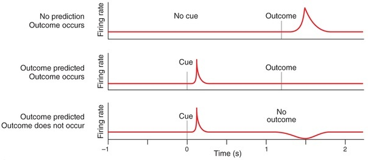
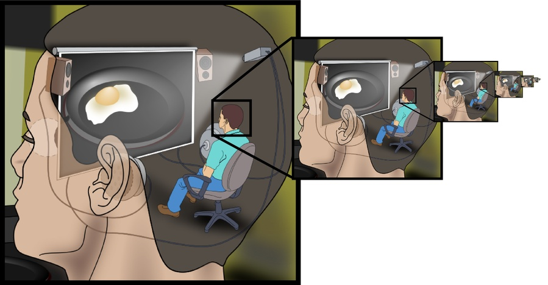

Pour reprendre les mots d’Idriss Aberkane, extraits de son livre «Libérez votre cerveau», j’appartiens à la «caste consanguine» des chercheurs qui se sont «soumis» aux exigences du système académique. Dans un récent billet (La science et les médias : ce que révèle le succès litigieux d’Idriss Aberkane), j’ai critiqué son curriculum vitae et notamment son prétendu parcours académique au Cogmaster de l’ENS Ulm, auquel il fut bien inscrit en 2005 mais qu’il ne poursuivit pas en seconde année, tout comme il abandonna l’idée d’obtenir le diplôme de l’Ecole Normale Supérieure (voir edit en fin de billet). Après avoir mis en cause le «contenant», comme de nombreux autres, je propose donc une critique du «contenu» qui n’est pas plus reluisant mais qui demande plus d’efforts.
L’éditeur vendra de très nombreux exemplaires du livre et je n’ai pas la prétention de penser que ma démarche y changera grand-chose. Que représentent quelques billets de blog face au rouleau compresseur télévisuel? Rien. Ce hold-up sera quoiqu’il arrive réussi et fort juteux.
Malheureusement, comme Idriss Aberkane se revendique d’une formation d’excellence en neurosciences cognitives, ses lecteurs risquent d’attribuer un crédit excessif à des propos souvent faux. D’où résulte la nécessité de déconstruire son livre pour limiter ses conséquences néfastes pour le grand public. Et je me permets ce jugement en sachant pertinemment que la vulgarisation est un exercice extrêmement difficile qui demande parfois d’emprunter des chemins de traverse et de faire quelques compromis avec la «vérité» scientifique.
A la lecture du livre, divertissant par endroits, j’ai tout d’abord été surpris par la place somme toute assez limitée qu’y occupent les neurosciences. Se transformant fréquemment en coach de développement personnel, comme dans ce long extrait disponible en ligne, l’ouvrage s’épanche sur le business, les techniques de drague, la guerre, la sagesse soufie, et sur l’école publique française, fustigée comme le temple de «la vie notée», en quoi il voit «tous les attributs d’une religion sadique, avec ses prêtres, son inquisition et ses expiations».
Partisan d’une révolution pédagogique fondée sur l’autonomie, inspiré par les récentes expériences de Céline Alvarez, Idriss Aberkane insiste sur l’importance de s’affranchir du jugement des autres et sur l’absurdité des notes, ce qui peut surprendre au vu de son désir de se faire reconnaître partout comme un «hyperdocteur» estampillé par les universités les plus prestigieuses. Compte tenu de la quantité d’erreurs qui parsèment son exposé, on se dit que son rejet systématique de l’évaluation par ses pairs découle peut-être d’un refus tout aussi systématique d’avoir tort.
I/ Erreurs factuelles
Malgré la profusion de neuro-concepts peuplant l’ouvrage, telles que «neurorenaissance», «neurosagesse», «neuromimétisme», «neuroconnaissance», «neuro-inspiration», etc., les neurosciences sont donc peu présentes. Et lorsqu’elles entrent en scène, on le regrette souvent. Morceaux choisis.
Exemple I.1 On peut lire que «neuf des dix connexions qui relient la rétine au cerveau sont des connexions descendantes, c’est-à-dire qu’elles vont du cerveau à la rétine et non l’inverse». Un rapide examen de la littérature permet de constater que la proportion réelle de ces connexions n’est pas de 90%, mais de 10 sur environ 1 000 000, soit 0.001% !
Exemple I.2 Parlant du fait que le cerveau «aime se voir confirmer ses croyances», Idriss Aberkane ajoute que lorsque le cerveau «projette une idée sur le monde et qu’elle est adoubée, il se crée en lui une puissante vague de récompense dopaminergique». Cet énoncé – qui n’est évidemment étayé par aucune référence – est en contradiction totale avec ce que l’on sait du fonctionnement des neurones dopaminergiques depuis 20 ans! En effet, l’activité de ces neurones fluctue précisément quand une croyance n’est pas confirmée par l’expérience : c’est ce que l’on appelle l’erreur de prédiction.
Exemple I.3 Plus problématique encore, car induisant en erreur des patients et leurs proches, Il est écrit : «on a découvert également que le nerf vague jouait un rôle décisif dans la maladie de Parkinson. Les patients vaguectomisés ont peu ou pas de chances de développer la maladie.». Non seulement l’affirmation découle d’un article qu’il a dû lire à la va-vite (ici), sans voir que les auteurs concluaient que le nerf vague pourrait être impliqué dans Parkinson, mais surtout, il oublie de mentionner que la même année (2015), un autre article paru dans la même revue mettait sérieusement en cause cette conclusion (là).

Ces trois points illustrent trois types d’erreurs présents dans le livre, erreurs évidentes qu’un bon vulgarisateur n’aurait pas commises. La première consiste à donner une information factuellement fausse qui interpelle immédiatement toute personne connaissant un tant soit peu la physiologie du système visuel. La seconde consiste à extrapoler de façon fantaisiste la fonction du système dopaminergique, ignorant un fait contraire établi depuis deux décennies et central dans le travail d’innombrables chercheurs. La troisième consiste à créer de faux espoirs chez les individus qui espèrent des neurosciences de nouvelles avancées thérapeutiques, en rapportant une hypothèse très discutable comme un fait avéré.
II/ Erreurs d’appréciation
Evidemment, toutes les données discutées ne sont pas fausses, mais le livre sombre souvent dans des erreurs d’appréciation importantes.
Exemple II.1 L’une d’elle consiste à laisser entendre au lecteur qu’il existerait dans le cerveau une entité qui commande, appelée aussi homoncule. Ce sophisme apparait en plusieurs endroits de son livre, comme lorsqu’il écrit «notre cerveau cherche à faire taire les réseaux qui n’ont pas la bonne réponse et à amplifier ceux qui l’ont», ou lorsqu’il écrit : «L’âme humaine est un chariot tiré par deux chevaux, l’un représentant nos passions (notre «moi-qui-commande») et l’autre notre modération (notre «moi véritable»)». Ces propos sont problématiques à l’heure où les neuroscientifiques essaient justement de faire comprendre au grand public que le cerveau est un organe dont les activités s’auto-structurent et que les décisions que nous prenons émergent de l’ensemble de ces activités plutôt que du jugement d’un décideur interne.

Exemple II.2 La description que donne Idriss Aberkane de la stimulation électrique transcranienne (tDCS en anglais) est encore plus sidérante, puisqu’il lui attribue le pouvoir d’inhiber dynamiquement les réseaux neuronaux qui ont «tort» et d’amplifier les réseaux qui ont «raison», et ainsi de «provoquer le génie». Outre que le concept de réseau neuronal ayant «tort» ou «raison» est fort peu scientifique, l’auteur semble ignorer que, pour des raisons physiques, la précision spatio-temporelle de la tDCS est fondamentalement limitée : soit on inhibe, soit on active, et le résultat a de toute manière une influence sur des portions très larges de cortex, jamais sur des populations précises de neurones !
Pour rester sur la stimulation électrique transcranienne, on relèvera que le livre est autocontradictoire lorsqu’il s’agit de discuter des neurotechnologies. Dans les premiers chapitres du livre, l’auteur passe son temps à nous faire rêver avec les calculateurs prodiges et suggère que l’utilisation des neurotechnologies permettra de faire de nous des génies, sans jamais mettre en garde contre les mésusages possibles de celles-ci. Pourtant, plusieurs chapitres plus loin, il écrit «le garagiste sait qu’il ne faut pas customiser un mécanisme qu’on ne sait pas refaire. Ceux qui prétendent augmenter le cerveau à l’aide d’implants non médicaux semblent ignorer ce principe». On ne sait donc pas à quoi s’en tenir. A-t-il changé d’avis sur la tDCS à la lecture d’un billet de blog publié début 2016 et dénonçant les risques associés à son utilisation le grand public?
III/ Contradiction internes
Sentant peut-être le vent tourner, Idriss Aberkane a apparemment écrit son livre très rapidement, sur l’année scolaire 2015-2016, en recyclant les travaux bénévoles de blogueurs scientifiques et en les compilant dans ce qui restera sans doute comme son unique best-seller. D’ailleurs, il écrit lui-même «j’ai pris l’habitude de suivre un cours dans la perspective de devoir le donner moi-même quelques jours, voire quelques heures après». Caractéristique du personnage, cet empressement et cette inaptitude à s’assurer qu’il maîtrise réellement le savoir qu’il diffuse amènent Idriss Aberkane à se contredire à de nombreux autres endroits du livre. J’en donne deux exemples supplémentaires ci-dessous.
Exemple III.1 Idriss Aberkane écrit qu’«à tâche égale, le cerveau de l’amateur consomme plus d’énergie que le cerveau de l’expert». Pourtant dans sa description du calculateur prodige Gramm, il assure aussi qu’une mesure de la consommation cérébrale de glucose a permis de montrer que «si Gamm utilisait bien des aires communes à lui et aux calculateurs «normaux», il en utilisait aussi d’autres»… De la même manière, à tâche égale, des activations cérébrales plus importantes ont récemment été observées chez des experts musiciens par rapport à des non-musiciens lors de la perception d’une partition de musique.
Exemple III.2 Au cours d’une téméraire tentative de description globale du cerveau à partir d’une analogie avec le monde économique, Idriss Aberkane propose que «chaque aire [cérébrale] est exportatrice et/ou importatrice d’un service» et distingue «produit neuronal de base» et «produit neuronal fini». Il ajoute alors que «nous ne pouvons pas modifier les industries de base de notre cerveau, qui sont fixées par l’évolution». Or, non seulement cette affirmation est rigoureusement fausse, mais l’auteur la contredit immédiatement après en voulant l’illustrer ! En effet, prenant à témoin «les neurones sensibles aux nombres du sillon intrapariétal», il donne un exemple d’aire cérébrale pouvant parfaitement traiter une information purement culturelle et donc insignifiante à l’échelle de l’évolution (i.e, le nombre, qui doit être différencié de la quantité qu’il représente). Plus loin dans l’ouvrage, il mentionne d’ailleurs la formidable plasticité du cerveau, qui permet notamment aux aveugles d’utiliser leur cortex visuel pour mieux entendre. Cette modification des fonctions de base de nos aires cérébrales au cours de l’apprentissage et du développement correspond à l’hypothèse du «recyclage neuronal» proposée notamment par Stanislas Dehaene.
Les neurones de la lecture par Stanislas Dehaene (notamment 3:50s à 6:20s).
Conclusion
Ayant déjà passé une bonne partie de mon week-end sur le cas Idriss Aberkane, je vais m’arrêter-là, en espérant en avoir dit suffisamment pour remettre les pendules à l’heure. Si je me suis lancé dans cette entreprise chronophage de déconstruction, c’est sans doute parce que les deux lignes de son CV qui font de lui un «spécialiste des neurosciences» se retrouvent également sur le mien. Comme lui, j’aspire à démocratiser les fruits de la recherche en neurosciences, mais contrairement à lui, j’aimerais le faire sans discréditer ma communauté et sans induire en erreur le grand public à la faveur d’une ambition personnelle.
Partant du parallèle entre son cursus et le mien, certains ont suggéré que ma critique d’Idriss Aberkane dérivait d’un irrépressible sentiment de jalousie face à sa réussite et à son exposition. A ceux-là, je réponds deux choses. Premièrement, n’étant pas chercheur et ne publiant pas d’articles scientifiques, sa réussite se définit en dehors du monde académique tandis que la mienne se définit en dedans. Cela signifie que si j’employais les mêmes méthodes pour obtenir une exposition médiatique (que je ne cherche pas au-delà du lectorat de ce blog), ma carrière serait vite compromise. Deuxièmement, ses choix semblent avant tout guidés par une terrible impatience de réussir : CV bidonné, diffusion d’un savoir superficiel et parfois faux, expertise de pacotille dans les domaines à la mode ; tous les ingrédients me paraissent réunis pour un succès éphémère suivi de lendemains qui déchantent.
EDIT 1/11: la vague de protestations contre le CV d’Idriss Aberkane l’a amené à rectifier plusieurs fois son CV ces dernières semaines, et il a finalement publié le 31/10/16 un message sur son site personnel pour commenter la version actuelle, dans laquelle plusieurs exagérations grossières ont été abandonnées. Dont acte.